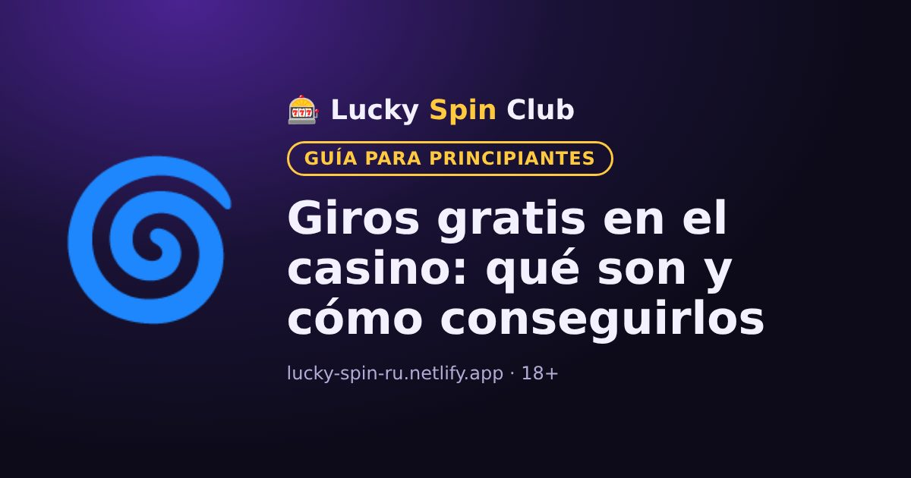

Giros gratis en el casino: qué son y cómo conseguirlos

Actualizado: 6 de noviembre de 2026
Los giros gratis (free spins) son tiradas sin coste en las tragamonedas. Se pueden obtener de dos formas distintas, y es importante no confundirlas.
Dos tipos de giros gratis
- Giros gratis de bonificación del casino. El casino los da por registrarte, por un depósito o en promociones. Normalmente valen para una tragamonedas concreta.
- Giros gratis dentro de la tragamonedas. Es una función del propio juego: por ejemplo, salen tres símbolos scatter y la máquina activa tiradas gratis.
Cómo conseguir giros gratis de bonificación
- Como parte del paquete de bienvenida para nuevos jugadores.
- Por depositar durante una promoción.
- En torneos y programas de fidelidad.
Busca las ofertas actuales en la sección «Bonos» o «Promociones» del casino.
Condiciones de los giros gratis
- Valor del giro: lo fija el casino y no se puede cambiar.
- Tragamonedas: los giros solo funcionan en el juego indicado.
- Plazo: los giros no usados caducan.
- Requisito de apuesta sobre las ganancias: a menudo hay que cumplirlo. Más información en «Qué es el requisito de apuesta».
Consejo
Antes de activarlos, revisa cuántos días son válidos y si hay un límite de retiro de las ganancias.
🧮 Calcula tu bono: nuestra calculadora muestra cuánto hay que apostar y si el bono conviene.
Abrir la calculadora¿Quieres probar? El registro toma alrededor de un minuto.
🎁 Registrarse y obtener el bonoPreguntas frecuentes
¿Se pueden retirar las ganancias de los giros gratis?
Sí, pero a menudo solo después de cumplir el requisito de apuesta y dentro del límite de retiro, si las condiciones lo establecen.
¿Puedo usar los giros gratis en cualquier tragamonedas?
Por lo general no: los giros gratis de bonificación solo valen para la tragamonedas indicada en las condiciones de la promoción.
¿Los giros gratis caducan?
Sí, tienen un plazo de validez. Los giros no usados normalmente se anulan al terminar.